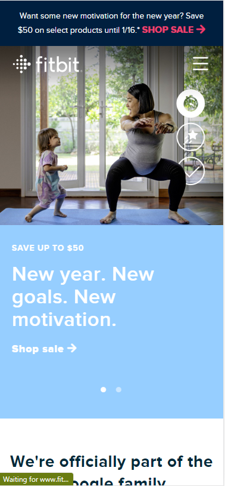
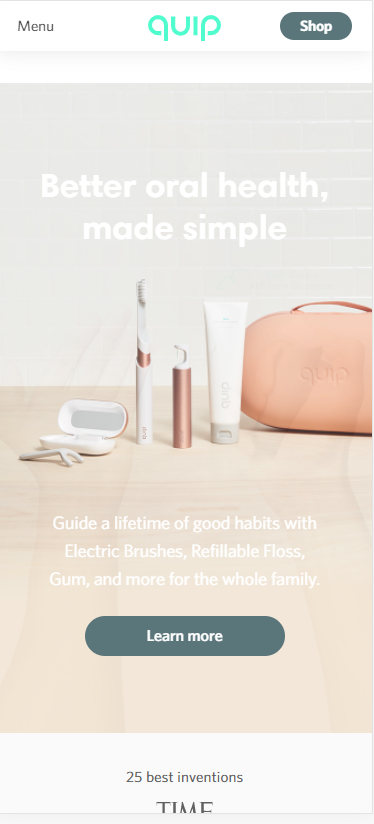

Design Principles Document
Jim Wilson
Visual Hierachy
FitBit
https://www.fitbit.com/global/us/home

Visual Heirachy uses font size, image size, color, location, and other means to indicate importance of
each element with the intent of emphasising the most important. This image place the person exercising
as the largest image and uses the Rule of Thirds to do so. The person is framed with what looks to be a
FitBit status indicator which places emphasis on the FitBit product.
Hick's Law
Amazon Prime Video
https://www.primevideo.com/
In a nutshell, Hick's Law predicts that when more choices are presented that an exponential increase in
decision time follows. The can result in form abandament or a bounce from the webpage. Sites like Prime
Video use the principle to keep visitors on the page longer becasue their viewers are typicall looking
for something to watch and do not know exactly what they want thus stay and search.
White Space and Clean Design
Quip
https://www.getquip.com/

White Space or Clean Design uses space to seperate elements and overcall accomplish a page that permits
the visitor to understand the purpose or focus of the page. Properly designed white space invites the
visitor to erelax and enjoy the experience provided by the page.